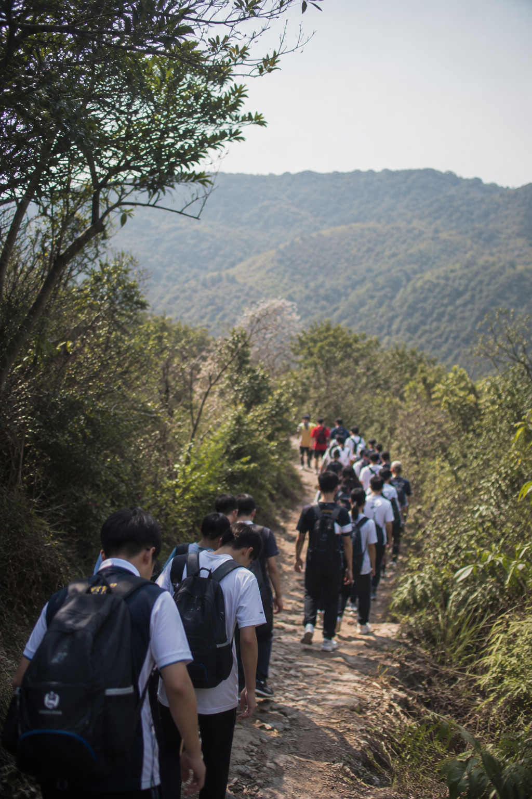

Forty-plus clubs, eight athletic programmes, four ensembles, and the entirety of Sai Kung Country Park as our second campus.
Co-curricular life isn’t an add-on. It’s where many of our students discover what they love, what they’re good at, and what they’re willing to work hard for.
Rugby, basketball, swimming, athletics, cross-country, and badminton — competing across Hong Kong’s school leagues.
String orchestra, concert band, choir, and drama. Annual Spring Concert and bilingual play production.
Robotics team, coding club, biology research society, and our makerspace open through lunch and after school.
Junior Police Call, community outreach, chapel team, and an annual mission trip across Asia.

Wisdom ValleyOur campus opens onto Sai Kung Country Park — and we make full use of it. Every year group has a structured outdoor learning expedition, from coastal ecology in S1 to a senior leadership trail across the MacLehose.
It’s the part of school we are proudest of. Students learn to read a map, to share a tent, to keep going when it rains, and to pay attention to a place that is older and bigger than they are.
See Curriculum